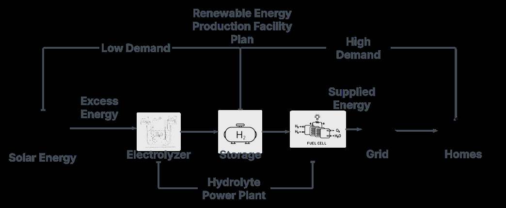
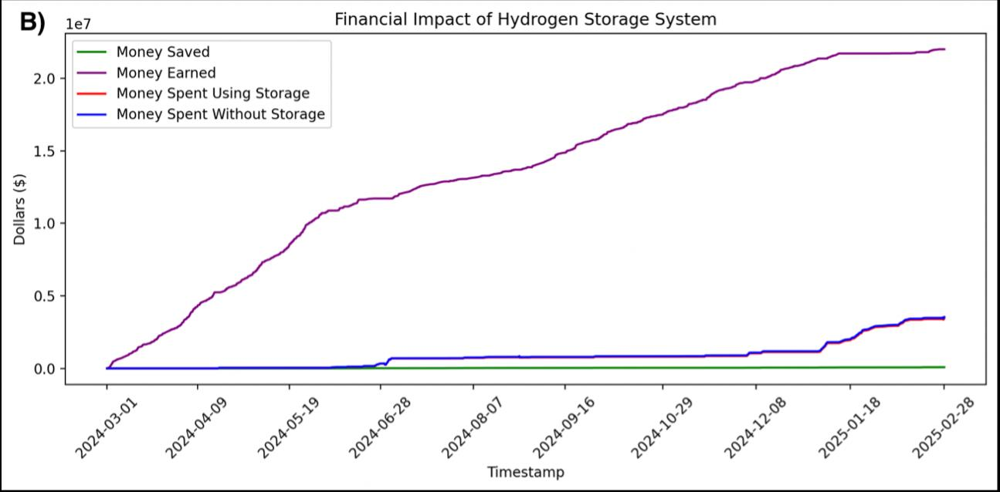
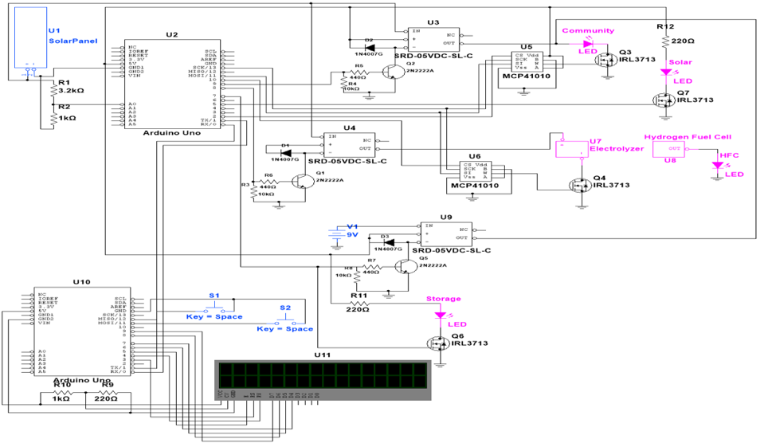
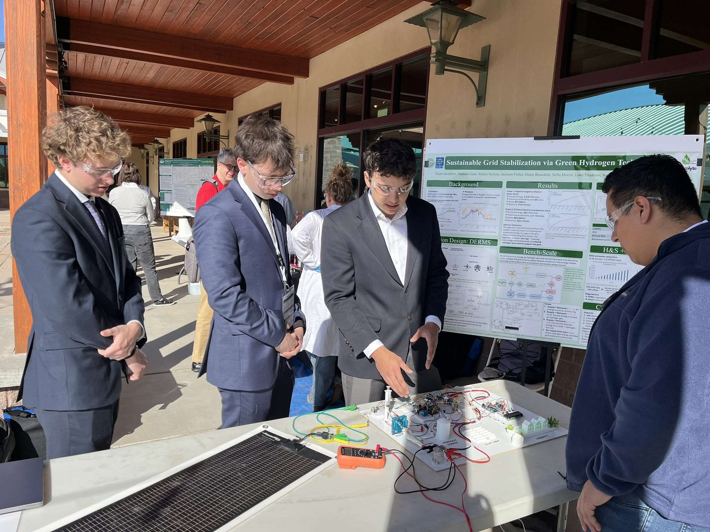

Embedded Systems · Power Electronics · Energy Systems
Green Hydrogen Grid Stabilization
A hydrogen-based energy storage concept for firming renewable generation — and the bench-scale embedded system that proved it, demonstrated at the WERC Environmental Design Contest.
The concept
Storing surplus renewable energy as hydrogen.
Solar generation peaks when demand does not. The proposal routes that surplus into an electrolyzer, stores the resulting hydrogen, and runs it back through a fuel cell when demand climbs — turning curtailed energy into dispatchable power.

The team modelled the economics against real utility load data for El Paso Electric and Imperial Irrigation District, sizing hydrogen storage to the point where additional tanks stopped paying for themselves.

What I built
The bench-scale power-firming system.
My contribution was the physical proof of concept: an embedded system that holds a load steady while its solar input swings, and diverts genuine surplus into hydrogen production. This is the hardware that travelled to New Mexico State University and ran in front of the judges.



How it regulates
An Arduino Uno continuously monitors solar panel voltage across a 0–20 V range. Based on that reading it sets relay states and adjusts MCP41010 digital potentiometers, which in turn set the gate voltages on IRL3713 N-channel MOSFETs to regulate current flow. Relays act as the coarse switches; the digital potentiometers do the fine control.
Four operating cases
- Insufficient solar. Solar path relays open, battery relay closed — the load runs entirely from storage.
- Partial solar. Solar and battery relays both closed — the load is supplied from both sources simultaneously.
- Optimal solar. Only the solar relay closed — the load runs directly off the panel with no draw on storage.
- Excess solar. Surplus is diverted to an electrolyzer, splitting deionized water into hydrogen and oxygen. The hydrogen feeds a fuel cell that recombines it with atmospheric oxygen to produce water and electricity.
Through the first three cases the digital potentiometers hold MOSFET gate voltages statically, limiting current to protect the components. In the surplus case they modulate dynamically, keeping load power stable while the solar input varies. A pair of pushbuttons and an LCD let an operator see live generation against demand and vary the demand level, so the demonstration responds to realistic conditions rather than a fixed script.
Recognition